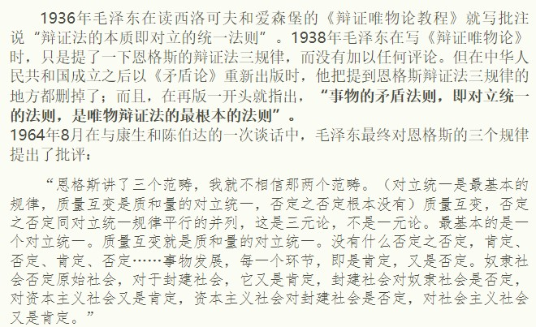
真没有“否定之否定”这个规律吗？
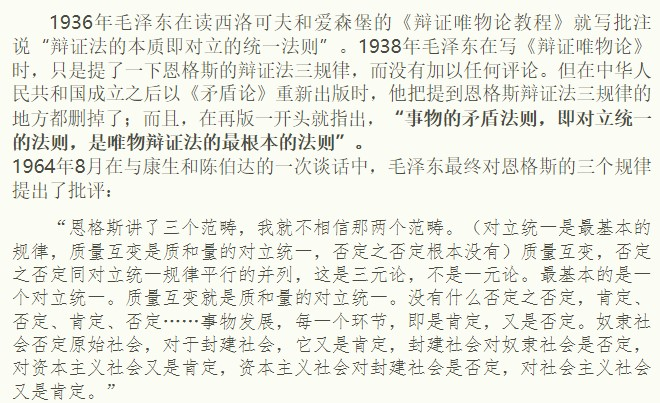
真没有“否定之否定”这个规律吗？
《矛盾論》矛盾諸方面的同一性和鬥爭性，和對抗在矛盾中的地位就含有否定之否定。然而否定之否定似乎描述了矛盾的對抗性，而矛盾歸根到底還是對立統一。否定之否定與量質互變高度混合，而如果單純地看這兩者，本質上都是走向形而上學的世界觀，即發展是增加和減少，是重複；而不是，發展是對立的統一。否定之否定是從一到二再到一，包含量質互變，本質還是對立統一。要找“否定之否定”可以研究德國古典哲學。
有书推荐吗
出自《关于哲学问题的讲话》
关于“否定之否定”这个规律的问题能说说吗
摘自出处未知的文章
二、否定之否定
我们已经知道事物内部总是存在矛盾着的两面，它们在一定条件下可以相互转化。事物由存在走向消亡的过程，就是内部矛盾着的“肯定”和“否定”相互转化的过程。肯定因素是保持事物存在的因素，否定因素是否定事物存在的因素。我们已经知道了“矛盾定律”，以此去解释，则是：在事物发展的过程中，否定方面对于肯定方面的否定，是对否定方面的肯定；否定方面被上升为肯定方面之后，要被新的否定方面否定。否定方面有两种，一种是“被否定的残余”，是落后的，消极的因素；一种是“新的否定萌芽”，代表了更高级的发展方向，是积极的因素。
每一个旧事物都曾是新事物，是积极的否定因素。这个否定因素是吸取了事物自己发展中的一切有益的营养而生长的，当它作为新事物起来否定旧事物时，实际上是从“母腹”中汲取养料，带着新的成分和因素脱胎而出的，因此它总是要有旧事物的某些痕迹，总与它脱胎而出的事物有这样或那样的相似之处。这种相似之处是前者的残余，往后在讲“内容与形式”的时候我们还要讲到。这种旧事物的残余会伴随新的发展而逐渐消亡，但是，在这个过程中，旧事物的残余，这种消极的否定因素是一刻不停的对新事物作用的。资本社会中的封建残余势力，社会主义社会中的资本残余势力，就是现存肯定的消极否定因素，在一定条件下，这种否定因素也可能压倒事物的肯定因素，使事物回到较低级的状态，造成事物的倒退。
新事物在最初出现的时候总是比较弱小的，但由于新事物符合历史发展的客观规律、代表了社会前进的方向，克服了旧事物中一切消极的、腐朽的东西，批判继承了旧事物中一切积极的、合理的因素，所以，它在内容上总是比旧事物丰富，在形式上比旧事物高级，具有旧事物不可比拟的优越性。尽管新物的成长要经历由小到大、由弱到强的曲折发展过程，但新事物取代旧事物是历史的必然。否定不是进化,不是改良,不是旧事物在新形式下的继续,而是质变,是革命,是旧事物的死亡和新事物的产生。在社会历史领域，识别一个事物是新的还是旧的，不能以它出现的时间先后为根据，也不能只看它形式上是否新奇，而是要看它是否同社会历史发展的必然趋势相一致。
事物由肯定、否定到否定之否定的过程，从表现形态和发展态势上看，呈现前进性和曲折性的统一。上升性或前进性，是事物发展不可逆的基本方向和趋势。在由辩证否定所构成的事物发展的链条中，每一次否定都是“扬弃”，是质变。事物发展到否定之否定阶段，经过两次辩证的否定，克服了前两个阶段的局限性和片面性，保留了前两个阶段的积极因素，又增加了新的内容。它推动着事物从低级向高级发展。事物经过对立面的两次否定、两次转化，就表现为一个周期，表现为仿佛是“回到出发点的运动”，这种周期性既表现着事物发展过程的曲折性，又表现了事物发展过程的前进性。事物发展的曲折性还由于事物内部矛盾斗争及周围条件的复杂性，决定新事物否定旧事物要经过反复的斗争。由于某些偶然的原因，事物发展会出现暂时的倒退，这也是曲折性的一种表现。螺旋式上升或波浪式前进，是事物发展的具体特征。否定之否定规律揭示了事物发展是前进性和曲折性的统一——事物发展的总方向、总趋势是前进的、上升的，事物发展的具体道路是迂回曲折的。
事物发展是螺旋式上升，波浪式前进的。我们在实际工作中应当认清事物发展的总方向、总趋势，坚持前进，反对倒退；同时又要客观地对待发展中的问题，充分估计到事物发展中的困难。要看到一定的曲折是正常现象，又要时刻注意把握前进的方向，尽量少走弯路，坚持前进性和曲折性统一的原理，反对循环论和直线论，坚定为人类美好事业而奋斗的信心。道路是曲折的，前途是光明的。社会主义、共产主义事业是人类历史上空前伟大的事业，在其发展过程中总会出现这样或那样的曲折，但它的发展符合历史发展的规律，代表人类前进的方向，最终必然取得胜利!
这话不也是认同“否定之否定”吗？
量质互变和肯定否定本质都是对立统一，都是对立统一的引申，对立统一是根本性的，没有说量质和肯否是错误的，只是说是非根本的
可教员这话不是不认为有否定之否定这个概念吗？只说有肯定或否定，根本就没有否定之否定。
毛主席应该没有说过另外两个规律不存在，只是着重强调了对立统一是辩证唯物论的根本规律，一切问题都应该从这个根本规律来入手。所谓的“三元论”是把三种重要性等同，而毛主席指出，对立统一是根本，这也是为了避免形而上学错误，毕竟不只有辩证唯物论有量质互变和否定之否定，唯心辩证法和严肃辩证法也可能会有。
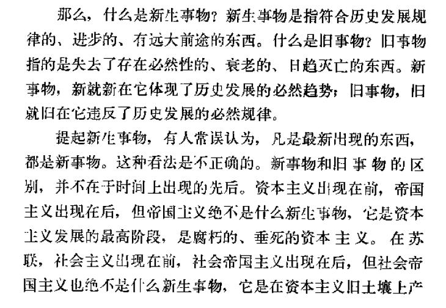
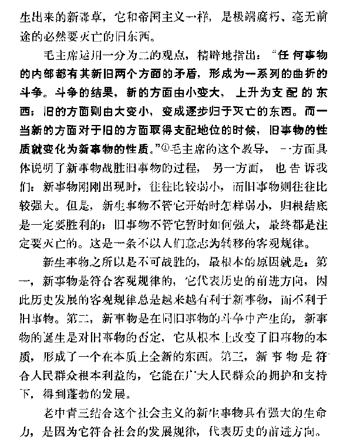
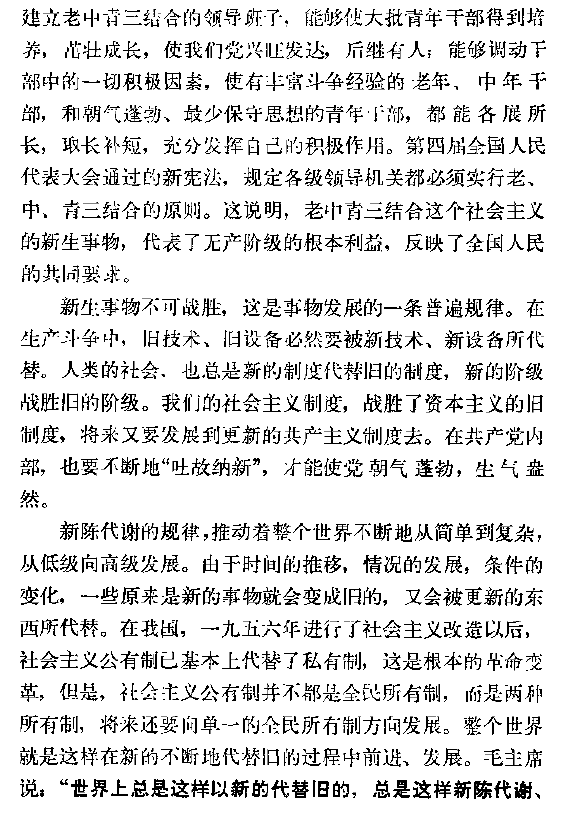
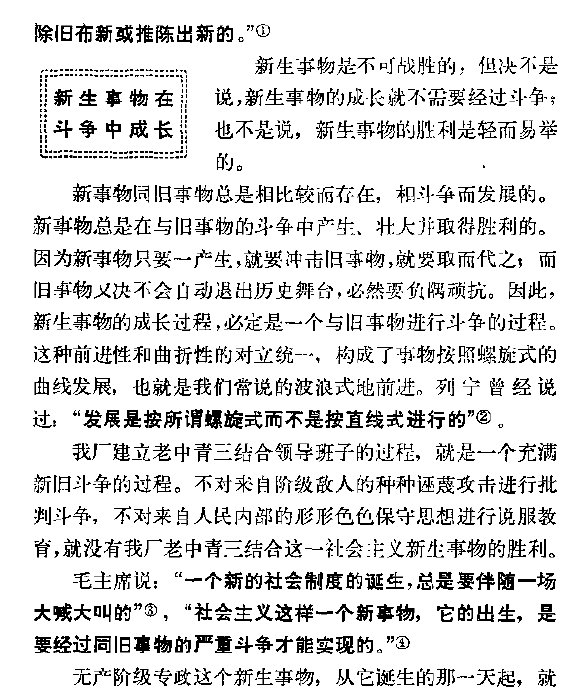

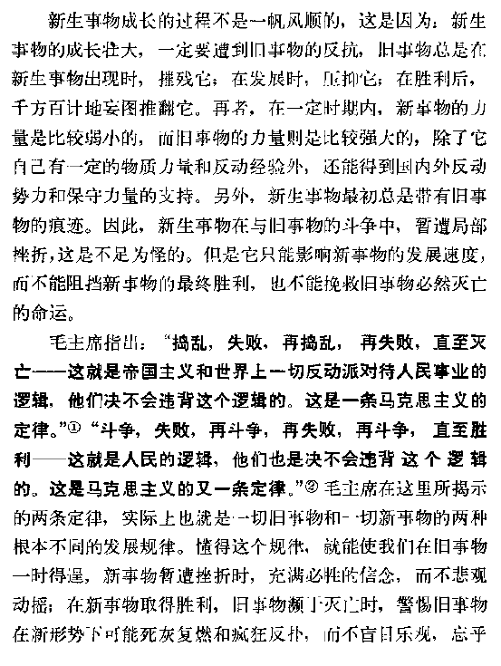
这个是一本工农兵哲学教材所写的关于新事物一定胜利旧事物一定灭亡章节，旧体现了否定之否定完全可以用对立统一来理解和体现，而不是说彻底否定了否定之否定这个理论的存在。
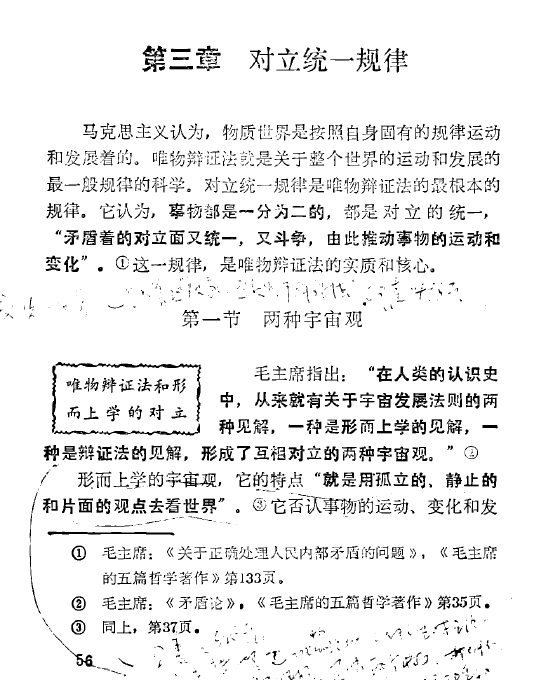
76年北京的哲学教材也提到，对立统一是根本和实质，所以要从这个角度去理解。
”没有什么否定之否定，肯定否定、肯定、否定……事物发展，每一个环节，即是肯定，又是否定。奴隶社会否定原始社会，对于封建社会，它是肯定，封建社会对奴隶社会是否定，对资本主义社会又是肯定，资本主义社会对封建社会是否定，对社会主义社会又是肯定。”
那怎么理解这段话？原始公社的无阶级社会到阶级社会再到共产主义的无阶级社会，这不是否定之否定吗？还是说不要局限在这个词上，与其称之为否定之否定规律，不如称之为肯定否定规律？
其实就是对立统一就可以解释且包含否定否定的内容，而否定否定或者肯定否定只是形式或者说名称，不是主要矛盾
既是肯定，又是否定
个人理解:
新事物取代旧事物，所以新事物否定旧事物
新事物是在旧事物的基础上发展起来的，还会存在旧事物的残余，但先进的东西是主流，所以旧事物肯定新事物
但都是一个意思，是吧？
你应该想一想，这是记录稿，谈话的时候是不会出现括号里的话的。
https://www.marxists.org/chinese/maozedong/1968/5-104.htm
（康生同志：主席能不能讲讲三个范畴的问题。）
恩格斯讲了三个范畴，我就不相信那两个范畴。（对立统一是最基本的规律，质量互变是质和量的对立统一，否定之否定根本没有。）质量互变，否定之否定同对立统一规律平行的并列，这是三元论，不是一元论。最基本的是一个对立统一。质量互变就是质和量的对立统一。没有什么否定之否定，肯定、否定、肯定、否定……事物发展，每一个环节，即是肯定，又是否定。奴隶社会否定原始社会，对于封建社会，它又是肯定，封建社会对奴隶社会是否定，对资本主义社会又是肯定，资本主义社会对封建社会是否定，对社会主义社会又是肯定。
怎么综合法？难道原始社会和奴隶社会并存？并存是有的，只是小部分。作为总体，是要消灭原始社会。社会发展也是有阶段的，原始社会又分好多阶段，女人殉葬那时还没有，但是服从男人。先是男人服从女人，走到反面，女人服从男人。这段历史还搞不清楚，有一百多万年。阶级社会不到五千年。什么龙山文化，仰韶文化，原始末期有了彩陶。总而言之，一个吃掉一个，一个推翻一个，一个阶级消灭，一个阶级兴起，一个社会消灭，一个社会兴起。当然在发展过程中，不是很纯的，到了封建社会里还有奴隶制，主体是封建制，还有些农奴，也有些工奴，手工业的。资本主义社会也不那么纯粹，再先进的资本主义社会，也有落后部分。如美国南部的奴隶制，林肯消灭奴隶制，现在黑人奴隶还有，斗争很激烈，二千多万人参加，不少。
一个消灭一个，发生、发展、消灭，任何东西都是如此。不是让人家消灭，就是自己灭亡，人为什么要死？贵族也死，这是自然规律。森林寿命比人长，也不过几千年。没有死，那还得了。如果今天还能看到孔夫子，地球上的人就装不下去了，赞成庄子的办法，死了老婆，敲盆而歌。死了人要开庆祝会，庆祝辩证法的胜利，庆祝旧事物的消灭。社会主义也要灭亡，不灭亡就不行，就没有共产主义，共产主义至少搞个百把万、千把万年，我就不相信共产主义就没有质变，就不分质变的阶段了？我不信。量变质，质变量。完全一种性质，几百万年不变了，我不信！按照辩证法，这是不可设想的。就一个原则，各尽所能，各取所需。就搞一百万年，就是一种经济学，你信不信？想过没有？那就不要经济学家？横直一本教科书就可以了，辩证法也死了。
辩证法的生命就是不断走向反面。人类最后也要到末日。宗教家说末日，是悲观主义，吓唬人。我们说人类灭亡，是产生比人类更进步的东西，现在人类很幼稚。恩格斯讲，要从必然的王国到自由的王国，自由是对必然的理解。这句话不完全，只讲了一半，下面的不讲了。单理解就能自由了？自由是必然的理解和必然的改造。还要做工作，吃了饭没事做，只理解一下就行？找到了规律要会用，要开天辟地，破破土，砌房子，开矿山，搞工业。将来人多了，粮食不够，要从矿物里取食品，这就是改造，才能自由，将来就能那么自由？列宁讲过，将来空中飞机像苍蝇一样多，闯来闯去，到处撞怎么得了？怎么调动？调动起来那么自由？北京现在有一万辆公共汽车，东京有十万辆（还是八十万辆）所以车祸多，我们车少再加上教育司机，教育人民，车祸少。一万年以后，北京怎么办？还是一万辆车？会发明新东西，不要这些交通工具，就是人起飞，用简单机器，一飞就飞到一个地方，随便哪里都可以落，单对有必然的理解不行，还要改造。
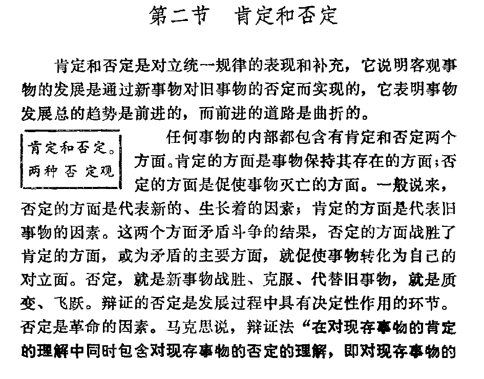
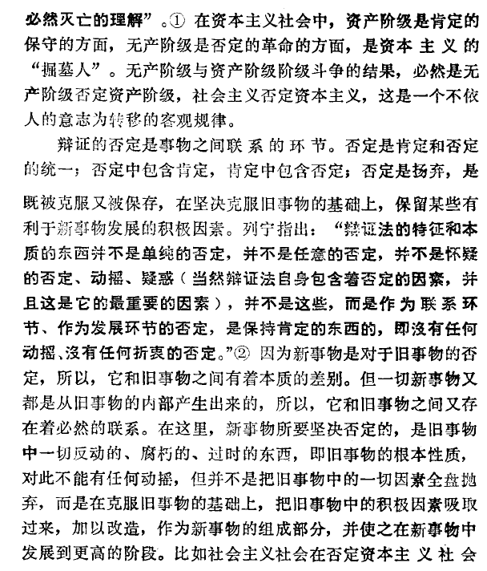
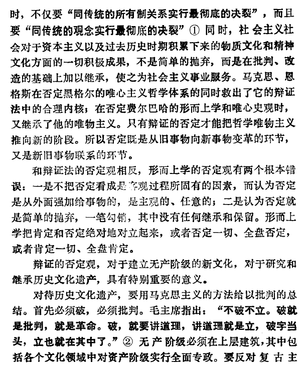
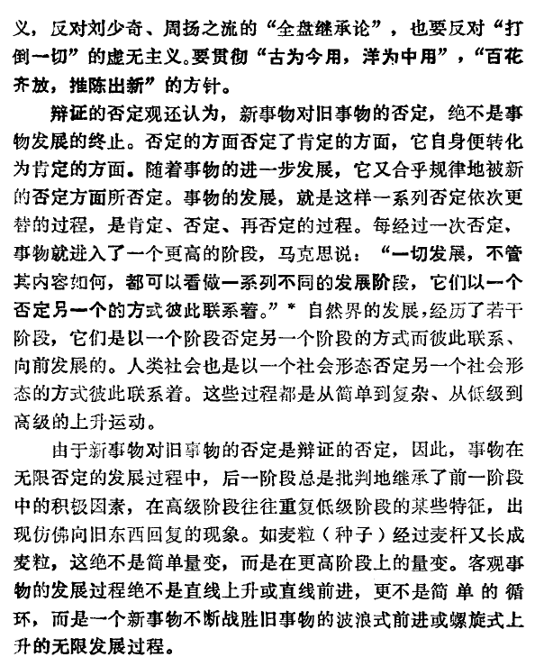
这说是什么书，同志